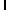
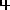

Hopfield NN Digit Recovery
Designed by:
Navid Salahian
Choose Your Pattern
 
Set Noise Pattern
20
Set Delay
ms
Go!
Please enable JavaScript to view the Hopfield Neural Network visualization by Navid Salahian.